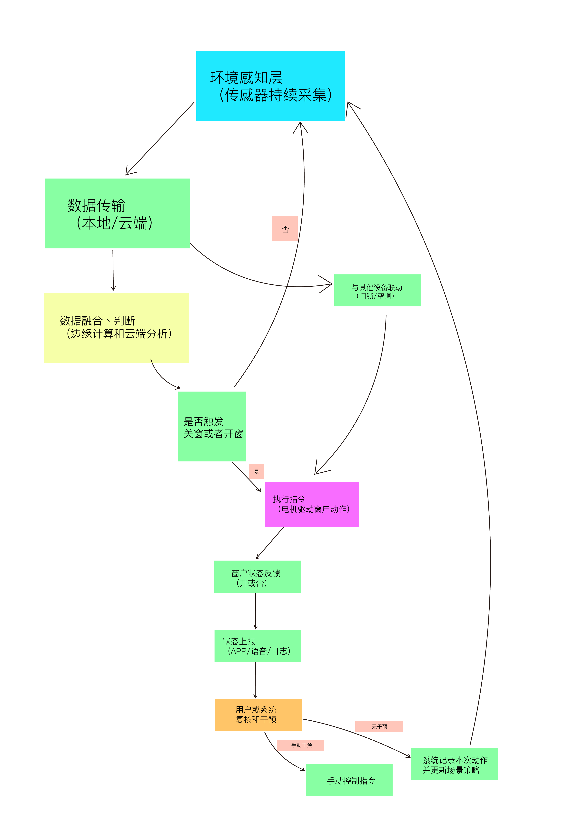
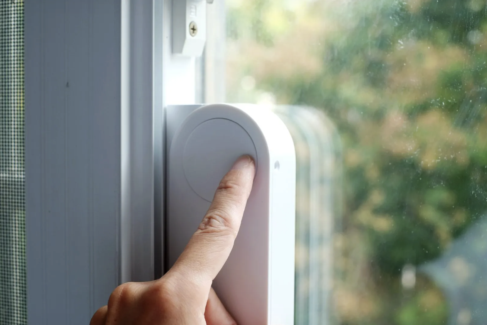

Exercise 6: Arduino IOT
IOT and Interaction
IOT Project Introduction
Smart Window Closer:
The smart window closer utilizes Internet of Things (IoT) technology to help users achieve automated control of windows, enhancing the comfort and safety of living environments. This system uses environmental sensors, intelligent control modules, and remote communication technology to monitor outdoor weather changes and indoor environmental conditions in real-time, automatically executing window opening or closing operations to prevent losses caused by sudden storms or human negligence.

In the smart window closer, multiple sensors are installed on the exterior or interior of windows to detect parameters such as raindrops, wind speed, light intensity, and indoor temperature and humidity. When the rain sensor detects rainfall or the wind speed sensor detects strong winds, the system immediately issues a window closing command. Meanwhile, indoor air quality sensors (such as CO₂ and PM2.5 sensors) can also be linked for control, automatically opening windows when ventilation is needed to achieve intelligent indoor environment regulation.
The control center employs edge computing or cloud-based analysis to comprehensively evaluate sensor data and execute precise actions based on user-preset scene modes (such as away mode, sleep mode, rainy day mode, etc.). Additionally, the system supports linkage with smart door locks, security cameras, air conditioners, and other devices. For example, it can automatically close all windows and activate security alerts after leaving home, or automatically open windows to exhaust smoke during fire alarms, enhancing emergency response capabilities.

Users can remotely check the window opening/closing status via mobile apps or voice assistants, and manually control the opening angle of each window at any time. The system also provides historical records and anomaly alert functions, allowing users to understand window operation status. Installation is flexible, suitable for both wired installations in newly renovated homes and wireless battery or solar-powered solutions for retrofitting older buildings.
The advantages of the smart window closer include effectively preventing rainwater backflow, reducing air conditioning energy consumption, minimizing dust entry, and enhancing home security levels. It solves the inconvenience of traditional windows that rely on manual operation, making it particularly suitable for high-rise residences, villas, offices, and areas with frequent rain or sandstorms. Through intelligent decision-making and automated execution, this product not only improves quality of life but also provides practical solutions for energy conservation, environmental protection, and smart home construction.
Key Features:
- Automated Control: Real-time monitoring and automatic window operation based on environmental conditions
- Multi-Sensor Integration: Rain, wind, light, temperature, humidity, and air quality sensors
- Smart Scene Modes: Away mode, sleep mode, rainy day mode, and customizable settings
- Device Linkage: Integration with smart locks, cameras, HVAC systems, and security devices
- Remote Control: Mobile app and voice assistant support for remote monitoring and control
- Emergency Response: Automatic window operation during fire alarms or other emergencies
- Flexible Installation: Supports both wired and wireless power solutions
- Energy Efficiency: Reduces HVAC energy consumption through intelligent climate control
Technical Specifications:
| Control Module | Arduino-based microcontroller with IoT connectivity |
| Sensors | Rain sensor, wind speed sensor, light sensor, temperature/humidity sensor, air quality sensor |
| Communication | Wi-Fi, Bluetooth, or Zigbee for remote connectivity |
| Power Supply | Wired AC adapter, battery backup, or solar panel options |
| Motor Type | Stepper motor or linear actuator for precise window control |
| User Interface | Mobile app (iOS/Android), voice assistant integration, physical buttons |
Application Scenarios:
High-Rise Residences
Prevents rain damage and enhances safety in tall buildings where manual window operation is difficult.
Villas & Luxury Homes
Integrates seamlessly with comprehensive smart home systems for premium living experience.
Office Buildings
Improves energy efficiency and maintains optimal working environment automatically.
Rainy/Windy Regions
Essential protection for areas with frequent storms, sandstorms, or extreme weather conditions.